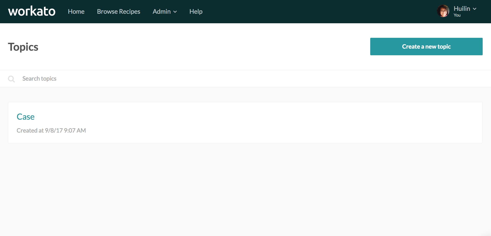
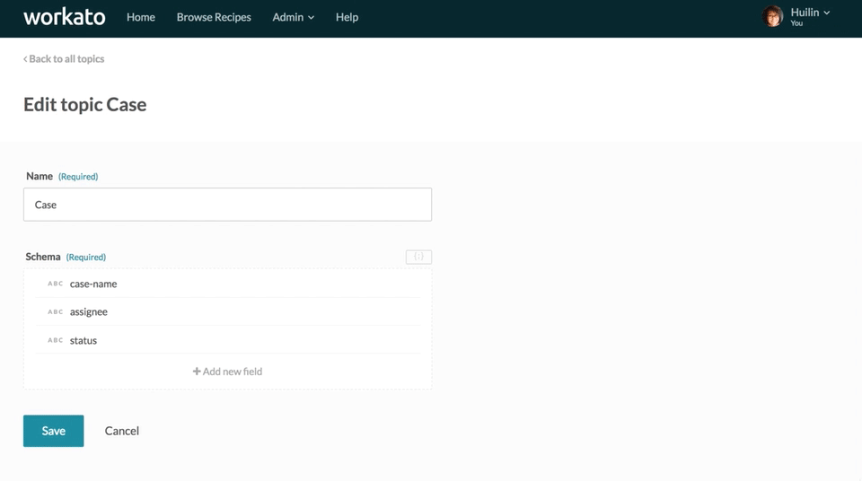
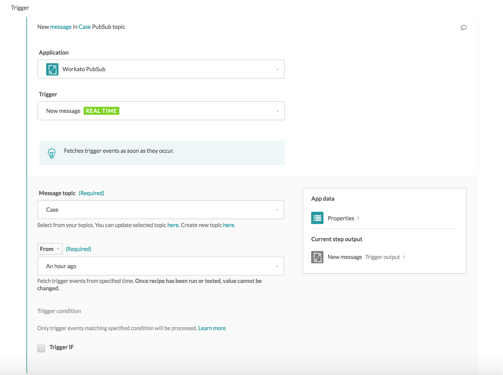
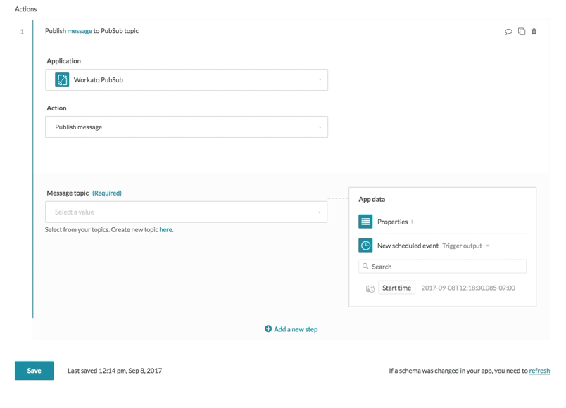
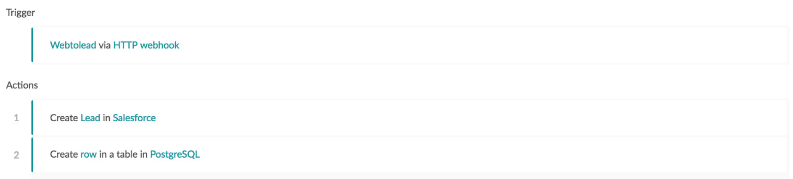
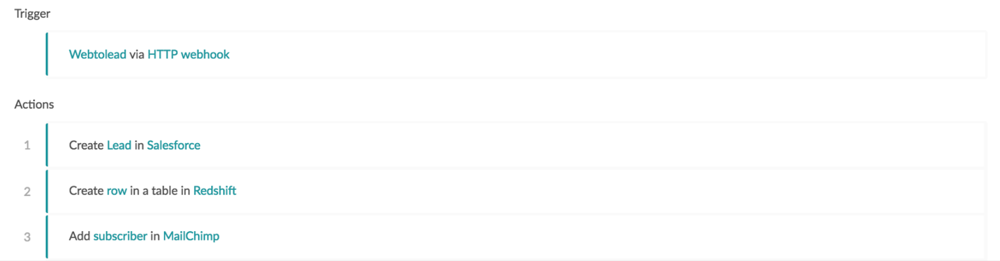
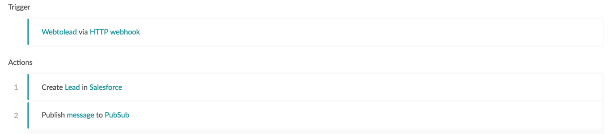
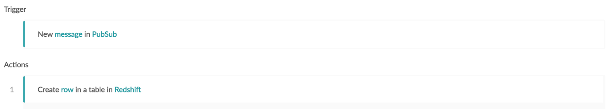
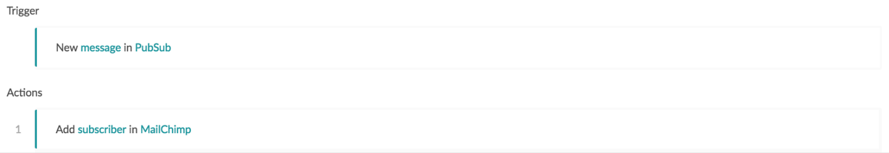

PubSub by Workato
The PubSub connector enables you to implement integration solutions that require an event-driven, messsage-oriented architecture that decouples publishers and consumers. The connector implements a messaging system with support for guaranteed and persistent delivery. This allows us to chain recipes sequentially, as a recipe can publish a message that multiple other recipes consume as a trigger to kickstart their workflow.
This connector allows us to add or modify recipes which are consumers without affecting recipes which are publishers. This enables zero downtime for the publisher recipe as we can add new consumers without impacting or requiring changes in the publisher recipe. This decoupling results in simpler recipes and reduces the time required to create, test, and maintain recipes.
How to connect to the PubSub connector on Workato
There is no connection required to use the PubSub connector, as schemas are stored in the Workato account for recipes to interact with.
Working with the PubSub connector
In order to work with the PubSub connector, users require access to the PubSub topics feature, which is enabled only for certain plans. Check the Pricing and Plans page or reach out to Workato sales representatives at +1 (844) 469-6752 to find out more.
Creating and managing topics
When using the PubSub connector, you can listen to messages in a topic or publish messages to a topic. In order to do so, you have to first create a topic, and define the message structure for that topic, so that publishers and consumers alike know what to expect when sending or receiving messages.
You can create and manage your topics on the topics feature page.
 Manage and create topics on the topics page
When creating topics, you will need to define what the data structure of the messages will look like. This structure can be subsequently edited.
 Editing the topic message schema definition
Using the new message trigger
The new message trigger allows us to subscribe to a specific topic in Workato. Any messages published to that topic will be picked up by the trigger as a single trigger event.
 Select the topic to configure the new message trigger
Using the publish message action
The publish action allows us to publish messages to a specific topic in Workato. Any messages published to that topic will be picked up by the new message trigger as a single trigger event.
 Select the topic and fill in the input fields to configure the publish message action
Example scenario using the PubSub connector
For example, we have a recipe that creates leads in Salesforce upon receiving a WebToLead HTTP request, built to retrieve contact data from leads who filled in a form online. After creating the lead, the recipe updates an analytics database in Postgres.
 Recipe moving leads from an online form to Salesforce and PostgreSQL
If our organization was to change databases from PostgreSQL to RedShift, and start using MailChimp as a mailing list application, we have 2 approaches we can take.
1) Modify the original recipe without using the PubSub connector
We would need to update our recipe as follows.
 Modified recipe to add rows to Redshift instead of PostgreSQL and add subscribers to MailChimp
The change to the original recipe would require additional iterations of the recipe development lifecycle, as the recipe would need to be modified, tested for backward compatibility, and pushed to production. Any bugs slipping through QA would result in downtime for the production recipe.
2) Use the PubSub connector
If we were utilizing the PubSub connector and queues, we could have built the original recipe in this way, to create a Salesforce lead before publishing the lead data to a topic. This recipe will not need to care about its consumers, and therefore it does not need to know that downstream recipes are changing from PostgreSQL to Redshift, or that there is an additional consumer writing to MailChimp.
 Publisher recipe that creates a lead in Salesforce and publishes lead data to a topic
The corresponding consumer recipe that creates a Redshift row with the lead data will look as follows.
 Consumer recipe that consumes the lead data from the topic and creates a Redshift row with the lead data
The corresponding consumer recipe that creates a MailChimp lead with the lead data will look as follows.
 Consumer recipe that consumes the lead data from the topic and creates a MailChimp lead with the lead data